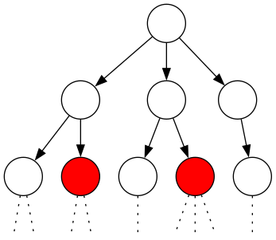
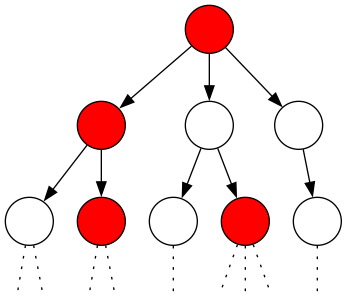
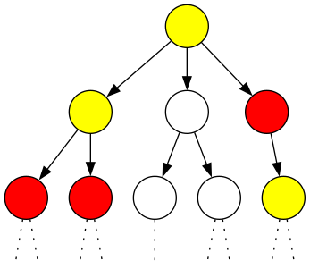
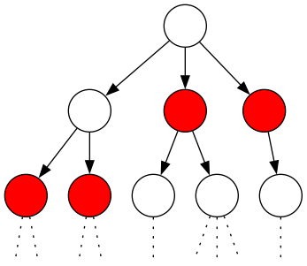
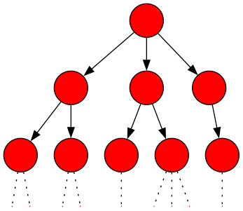
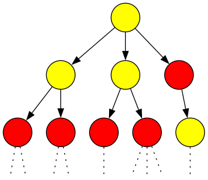

Computational Tree Logic
Syntax
CTL has a two-stage syntax where formulae in CTL are classified into state and path formulae. The former are assertions about the atomic propositions in the states and their branching structure, while path formulae express temporal properties of paths. Compared to LTL formulae, path formulae in CTL are simpler: as in LTL they are built by the next-step and until operators, but they must not be combined with Boolean connectives and no nesting of temporal modalities is allowed.
CTL state formulae over the set \(\texttt{AP}\) of atomic proposition are formed according to the following grammar:
\[ \Phi ::= \texttt{true} \,\mid\, a \,\mid\, \Phi_1 \land \Phi_2 \,\mid\, \lnot \Phi \,\mid\, \exists \Phi \,\mid\, \forall \Phi \]
where \(a \in \texttt{AP}\) and \(\phi\) is a path formula. CTL path formulae are formed according to the following grammar:
\[ \phi ::= \bigcirc \Phi \,\mid\, \Phi_1 \,\mathcal{U}\, \Phi_2 \]
where Φ, Φ1 and Φ2 are state formulae.
(…)
CTL distinguishes between state formulae and path formulae. Intuitively, state formulae express a property of a state, while path formulae express a property of a path, i.e., an infinite sequence of states.
- Path formulas cannot be combined using logical connectives.
- \(\bigcirc\) and \(\mathcal{U}\) alternate with \(\forall\) and \(\exists\), i.e.
Derived Operations
Semantics
Let \(a \in \texttt{AP}\) be an atomic proposition, \(\texttt{TS} = (\texttt{S}, \texttt{Act}, \longrightarrow, \texttt{I}, \texttt{AP}, \texttt{L})\) be a transition system1 without terminal states, state \(s \in \texttt{S}\), let \(\Phi\) and \(\Psi\) be CTL state formulae, and \(\phi\) be a CTL path formula. The satisfaction relation \(\models\) is defined for state formulae by
\begin{equation} \begin{split} s & \models a \leftrightarrow a \in \texttt{L}(s) \\ s & \models \lnot\Phi \leftrightarrow \lnot s \models \Phi \\ s & \models \Phi \land \Psi \leftrightarrow (s \models \Phi) \land (s \models \Psi) \\ s & \models \exists \phi \leftrightarrow \pi \models \phi, \texttt{ for some } \pi \in \texttt{Paths}(s) \\ s & \models \forall \phi \leftrightarrow \pi \models \phi, \texttt{ for all } \pi \in \texttt{Paths}(s) \end{split} \end{equation}for path \(\pi\), the satisfaction relation \(\models\) for path formulae is defined by
\begin{equation} \begin{split} s & \models \bigcirc \Phi \leftrightarrow \pi[1] \models \Phi \\ \pi & \models \Phi \,\mathcal{U}\, \Psi \leftrightarrow \exists j \geq 0. (\pi[j] \models \Psi \land (\forall 0 \leq k < j. \pi[k] \models \Phi)) \end{split} \end{equation}where for path \(\pi = s_0 s_1 s_2 \ldots\) and integer \(i \geq 0\), \(\pi[i]\) denotes the (i+1)th state of \(\pi\), i.e., \(\pi[i] = s_i\).
- The interpretations for atomic propositions, negation, and conjunction are as usual, where it should be noted that in CTL they are interpreted over states, whereas in LTL they are interpreted over paths.
CTL Semantics for Transition Systems
Given a transition system1 \(\texttt{TS}\) as before, the satisfaction set \(\texttt{Sat}_{TS} (\Phi)\), or briefly \(\texttt{Sat}(\Phi)\), for CTL-state formula \(\Phi\) is defined by:
\[ \texttt{Sat}(\Phi) = \{ s \in S \mid s \models \Phi \} \]
The transition system \(\texttt{TS}\) satisfies CTL formula \(\Phi\) if and only if \(\Phi\) holds in all initial states of \(\texttt{TS}\):
\[ \texttt{TS} \models \Phi \leftrightarrow \forall s_0 \in \texttt{I}, s_0 \models \Phi \]
This is equivalent to \(\texttt{I} \subseteq \texttt{Sat}(\Phi)\).
Intuition
EF (\(\exists \Diamond \texttt{red}\))

Figure 1: There exists a path where eventually a node is red. EG (\(\exists \Box \texttt{red}\))

Figure 2: There exists a path where globally (always) nodes are red. EU (\(\exists (\texttt{yellow} \,\mathcal{U}\, \texttt{red})\))

Figure 3: There exists a path where nodes are yellow until a red node is reached. AF (\(\forall \Diamond \texttt{red}\))

Figure 4: On all paths, eventually a node is red. AG (\(\forall \Box \texttt{red}\))

Figure 5: On all paths, globally (always) every node is red.
AU (\(\forall (\texttt{yellow} \,\mathcal{U}\, \texttt{red})\))

CTL Equivalence
CTL formulae \(\Phi\) and \(\Psi\) (over \(\texttt{AP}\)) are called equivalent, denoted \(\Phi \equiv \Psi\), if \(\texttt{Sat}(\Phi) = \texttt{Sat}(\Psi)\) for all transition systems \(\texttt{TS}\) over \(\texttt{AP}\).
Accordingly, \(\Phi \equiv \Psi\) if and only if for any transition system \(\texttt{TS}\) we have:
\[ \texttt{TS} \models \Phi \leftrightarrow \texttt{TS} \models \Psi \]
Duality Laws
Expansion Laws
In LTL we had something like:
\[ \phi \,\mathcal{U}\, \psi \equiv \psi \lor (\phi \land \bigcirc (\phi \,\mathcal{U}\, \psi)) \]
In CTL we have:
\begin{equation} \begin{split} \forall (\Phi \,\mathcal{U}\, \Psi) &\equiv \Psi \lor (\Phi \land \forall \bigcirc \forall(\Phi \,\mathcal{U}\, \Psi)) \\ \forall \Diamond \Phi &\equiv \Phi \lor \forall \bigcirc \forall \Diamond \Phi \\ \forall \Box \Phi &\equiv \Phi \land \forall \bigcirc \forall \Box \Phi \\ \exists (\Phi \,\mathcal{U}\, \Psi) &\equiv \Psi \lor (\Phi \land \exists \bigcirc \exists (\Phi \,\mathcal{U}\, \Psi)) \\ \exists \Diamond \Phi &\equiv \Phi \lor \exists \bigcirc \exists \Diamond \Phi \\ \exists \Box \Phi &\equiv \Phi \land \exists \bigcirc \exists \Box \Phi \end{split} \end{equation}Distributive Laws
In LTL:
\begin{equation} \begin{split} \Box (\phi \land \psi) &\equiv \Box \phi \land \Box \psi \\ \Diamond (\phi \lor \psi) &\equiv \Diamond \phi \lor \Diamond \psi \end{split} \end{equation}In CTL:
\begin{equation} \begin{split} \forall \Box (\phi \land \psi) &\equiv \forall \Box \phi \land \forall \Box \psi \\ \exists \Diamond (\phi \lor \psi) &\equiv \exists \Diamond \phi \lor \exists \Diamond \psi \end{split} \end{equation}note that:
\begin{equation} \begin{split} \exists \Box (\phi \land \psi) &\not\equiv \exists \Box \phi \land \exists \Box \psi \\ \forall \Diamond (\phi \lor \psi) &\not\equiv \forall \Diamond \phi \lor \forall \Diamond \psi \end{split} \end{equation}Normal Forms
The duality law for \(\forall \Phi\) shows that ∀ can be treated as a derived operator of ∃. That is to say, the basic operators ∃, ∃U, and ∀U would have been sufficient to define the syntax of CTL.
Existential Normal Form
For \(a \in \texttt{AP}\), the set of CTL state formulae in existential normal form (ENF, for short) is given by
\[ \Phi ::= \texttt{true} \,\mid\, a \,\mid\, \Phi_1 \land \Phi_2 \,\mid\, \lnot \Phi \,\mid\, \exists\bigcirc \Phi \,\mid\, \exists (\Phi_1 \,\mathcal{U}\, \Phi_2) \,\mid\, \exists\Box \Phi \]
Positive Normal Form
The set of CTL state formulae in positive normal form (PNF, for short) is given by
\[ \Phi ::= \texttt{true} \,\mid\, \texttt{false} \,\mid\, a \,\mid\, \lnot a \,\mid\, \Phi_1 \land \Phi_2 \,\mid\, \Phi_1 \lor \Phi_2 \,\mid\, \exists \phi \,\mid\, \forall \phi \]
where \(a ∈ \texttt{AP}\) and the path formulae are given by
\[ \phi ::= \bigcirc \Phi \,\mid\, \Phi_1 \,\mathcal{U}\, \Phi_2 \,\mid\, \Phi_1 \,\mathcal{W}\, \Phi_2 \]
References:
Footnotes:
See Transition Systems.